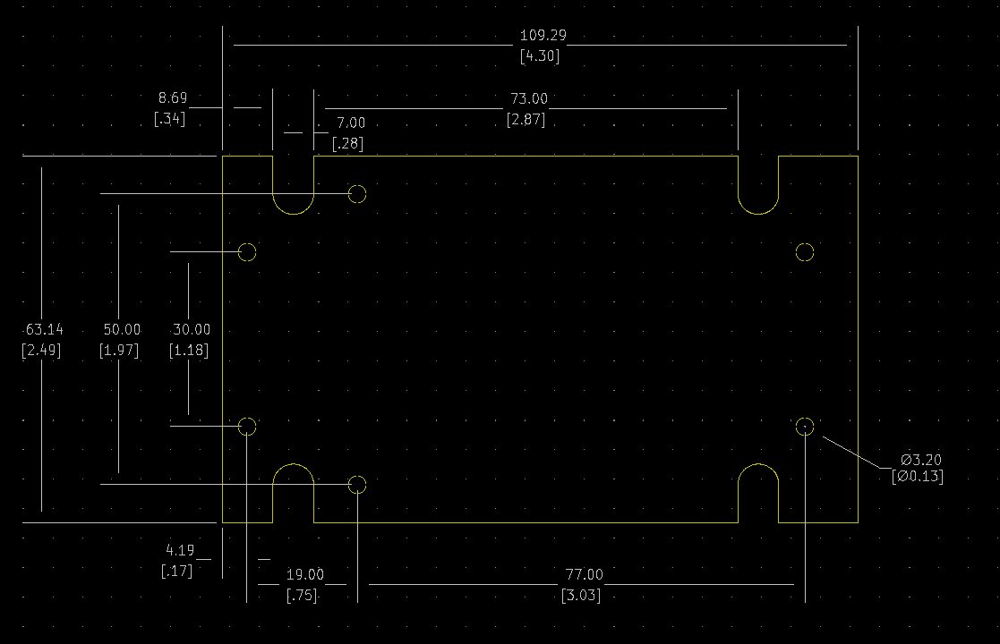

Project template containing the recommended board layout for Hammond Manufacturing RH3135:
Gray: RH3135 - HM1084-ND
Features:
- Electronic instrument enclosures, ideally suited for mounting printed circuit boards.
- Ergonomically designed for a comfortable fit into the user’s hand.
- Lap joint construction provides some protection against dust accumulation and splashing water.
- Removeable front panel for easy modifications.
- Molded in a light grey general purpose ABS plastic with a light texture (material carries a UL flammability rating of UL94 HB).
- Assembled with M3 Philips machine screws, threaded into integral brass bushings. Perfect for applications when repetitive assembly and disassembly are required.
The "Dwgs.User" layer contains all critical dimmensions in milimeters[inches].
The "Edge.Cuts" layer contains the maximum board outline and holes to align with board standoffs.
PCB Preview:
